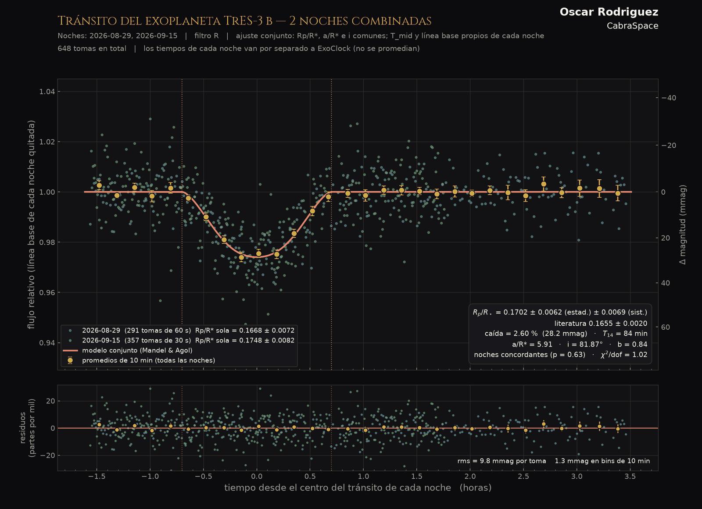
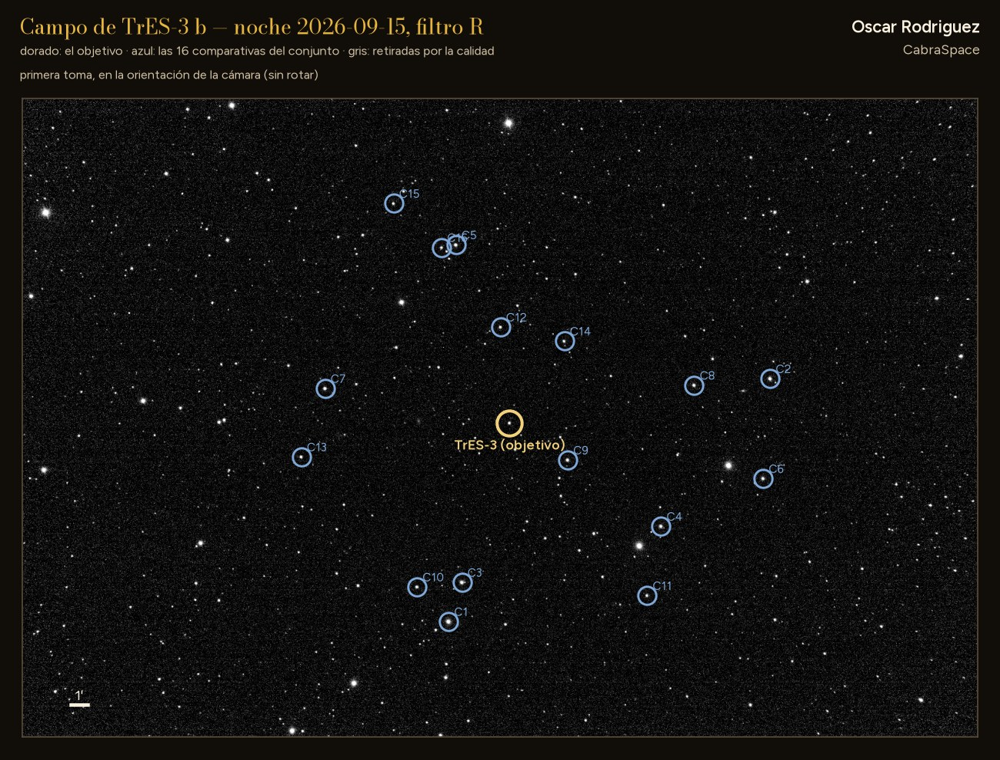

Lám. VIICurva de luz · dos noches combinadas
Tránsito de TrES-3 b


Notas
Dos noches ajustadas a la vez, con geometría común. Cada noche aporta su propia hora de tránsito, que se envía por separado a ExoClock.


Dos noches ajustadas a la vez, con geometría común. Cada noche aporta su propia hora de tránsito, que se envía por separado a ExoClock.